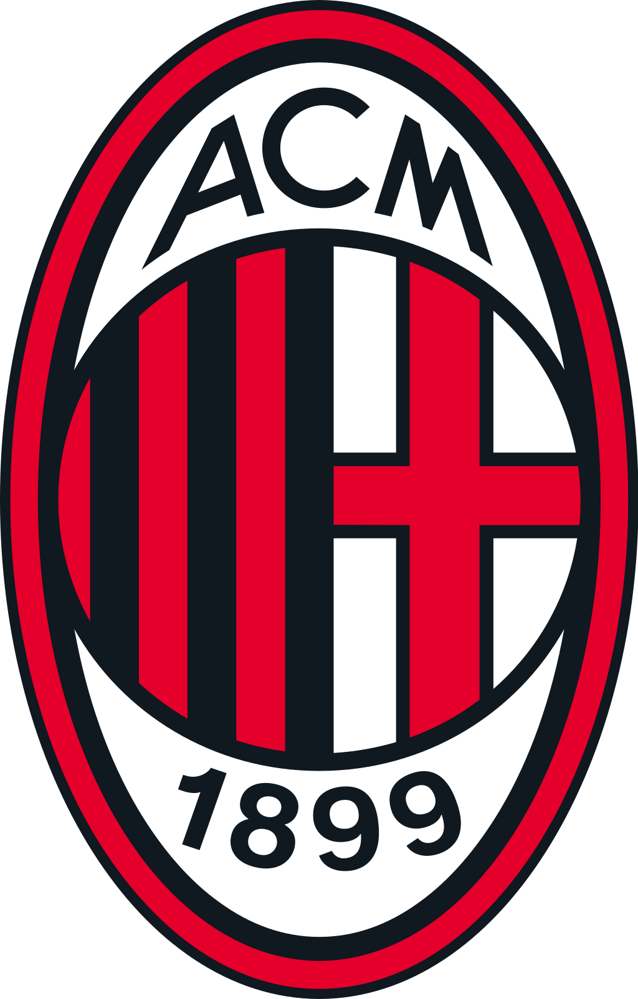

Hello, today I will be talking about my favourite team AC Milan. Associazione Calcio Milan, commonly referred to as AC Milan or simply Milan is an Italian professional football club based in Milan, Lombardy. Founded in 1899, the club competes in the Serie A, the top tier of Italian football, and has spent its entire history there with the exception of the 1980–81 and 1982–83 seasons.
Trophies won:
- Serie A 19
- Coppa Italia 5
- Supercoppa Italiana 7
- Champions League 7
- UEFA Super Cup 5
- FIFA Club World Cup 1